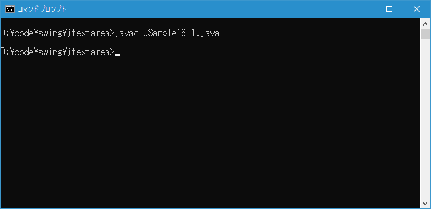
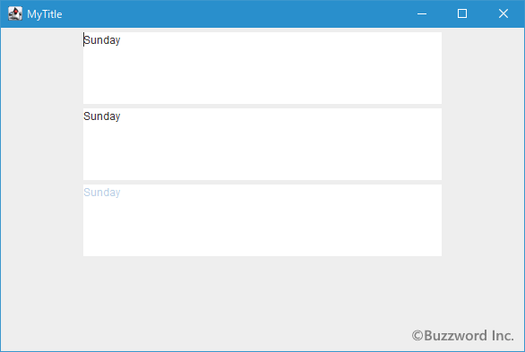
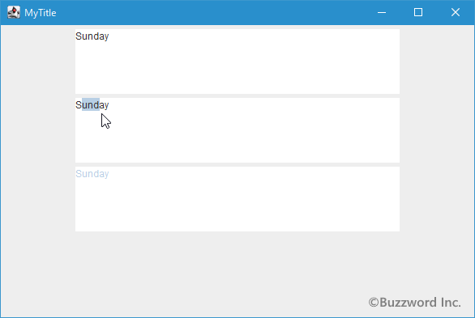

テキストエリアの編集可能/不可の切り替えおよび有効/無効の切り替え
テキストエリアを一時的に編集できない状態に変更したり、無効な状態に変更することができます。編集できなくした場合は、テキストエリアに新しいテキストを入力したり編集したりすることはできませんが既に入力済のテキストを選択してコピーすることはできます。無効にした場合はコピーすることもできません。ここではテキストエリアの編集可能/不可の切り替えおよび有効/無効の切り替えを行う方法について解説します。
テキストエリアの状態を変更する
テキストエリアを編集不可な状態にするには JTextArea クラスの親クラスである JTextComponent クラスで用意されている setEditable メソッドを使います。
public void setEditable?(boolean b)
このTextComponentが編集可能かどうかを示す指定されたbooleanを設定します。 状態が変更されると、PropertyChangeイベント(editable)が発生します。
パラメータ:
b - 設定されるboolean
引数には編集可能かどうかを表す boolean 型の値を指定します。 true を指定した場合は編集可能となり、 false を指定した場合は編集不可となります。
実際の使い方は次のようになります。
JTextArea textarea = new JTextArea(); textarea.setEditable(false);
テキストエリアの編集を不可にすると、テキストエリアに新しいテキストを入力したり入力済みのテキストを編集たりといったことは行えませんが、入力済みのテキストを選択しコピーすることはできます。
-- --
またテキストエリアを無効な状態にするには JTextArea クラスの親クラスである JComponent で用意されている setEnabled メソッドを使います。
public void setEnabled?(boolean enabled)
このコンポーネントが有効であるかどうかを設定します。 有効なコンポーネントはユーザーの入力に反応できますが、無効なコンポーネントはユーザーの入力に反応できません。 コンポーネントによっては、自身が無効な場合に表示を変更して、入力を受け取れないことを示すフィード・バックをユーザーに提供できます。
注: コンポーネントを無効化しても子は無効化されません。
注: 軽量化コンポーネントを無効化してもMouseEventは受信されます。
オーバーライド:
setEnabled 、クラス: Component
パラメータ:
enabled - このコンポーネントを有効化する場合はtrue、そうでない場合はfalse
引数には有効かどうかを表す boolean 型の値を指定します。 true を指定した場合は有効な状態となり、 false を指定した場合は無効な状態となります。
実際の使い方は次のようになります。
JTextArea textarea = new JTextArea(); textarea.setEnabled(false);
テキストエリアを無効にすると、テキストエリアに新しいテキストを入力したり入力済みのテキストを編集たりといったことは行えません。また入力済みのテキストを選択したりコピーしたりすることもできなくなります。
サンプルプログラム
それでは簡単なサンプルプログラムを作って試してみます。テキストエディタで次のように記述したあと、 JSample16_1.java という名前で保存します。
import javax.swing.JFrame;
import javax.swing.JTextArea;
import javax.swing.JPanel;
import javax.swing.JButton;
import java.awt.Container;
import java.awt.BorderLayout;
class JSample15_1 extends JFrame{
public static void main(String args[]){
JSample15_1 frame = new JSample15_1("MyTitle");
frame.setVisible(true);
}
JSample15_1(String title){
setTitle(title);
setBounds(100, 100, 600, 400);
setDefaultCloseOperation(JFrame.EXIT_ON_CLOSE);
JTextArea textarea1 = new JTextArea("Sunday", 5, 40);
JTextArea textarea2 = new JTextArea("Sunday", 5, 40);
textarea2.setEditable(false);
JTextArea textarea3 = new JTextArea("Sunday", 5, 40);
textarea3.setEnabled(false);
JPanel p = new JPanel();
p.add(textarea1);
p.add(textarea2);
p.add(textarea3);
Container contentPane = getContentPane();
contentPane.add(p, BorderLayout.CENTER);
}
}
次のようにコンパイルを行います。
javac JSample16_1.java

コンパイルが終わりましたら実行します。
java JSample16_1
テキストエリアを 3 つ追加しました。 1 つ目はデフォルトのテキストエリア、 2 つ目は編集不可に設定したテキストエリア、 3 つ目は無効に設定したテキストエリアです。

編集不可にしたテキストエリアは、入力された内容を編集することはできませんが入力済みのテキストを選択することはできます。無効にしたテキストエリアは入力済みのテキストを選択することもできません。

-- --
テキストエリアの編集可能/不可の切り替えおよび有効/無効の切り替えを行う方法について解説しました。
( Written by Tatsuo Ikura )

著者 / TATSUO IKURA
初心者～中級者の方を対象としたプログラミング方法や開発環境の構築の解説を行うサイトの運営を行っています。